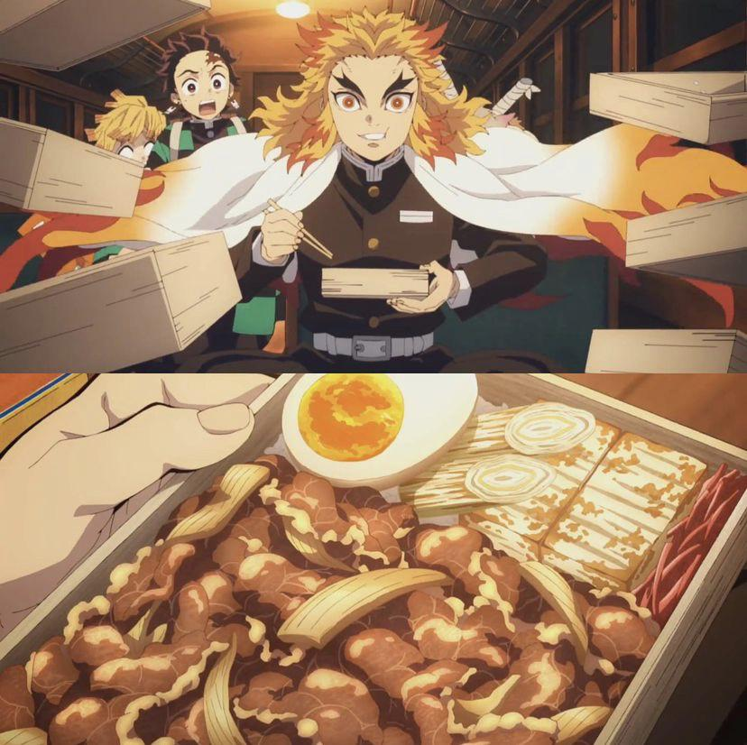

Gyudon (Beef Bowl)

Gyudon, or "beef bowl," is a popular and comforting Japanese dish consisting of tender slices of beef and onions simmered in a savory-sweet sauce made from soy sauce, sugar, mirin, and dashi. This flavorful mixture is served over a steaming bowl of white rice, making it a hearty and satisfying meal.
Often garnished with pickled ginger (beni shoga), a raw or soft-boiled egg, and green onions, gyudon balances sweet, salty, and umami flavors perfectly. Loved for its simplicity and quick preparation, gyudon is a go-to dish for busy individuals and families in Japan, offering a delicious taste of home-style cooking.
Ingredients:
- 1 tsp Vegetable Oil
- 175g Tofu
- 100g Tokyo Negi
- 100g Onions
- 1/4 cup Sake
- 1/4 cup Mirin
- 1/4 cup Soy Sauce
- 2 tbsp Cane Sugar
- 250g Beef(thinly sliced)
- Ajitsuke Tamago Benishoga
- Rice (2 servings)
Directions:
- Heat a frying pan over medium-high heat until hot. Add the oil and then add the tofu and Negi in a single layer. Fry these undisturbed until they're browned on one side (~2 minutes). Flip them over and then push them to one side of the pan.
- Add the onions along with the sake, mirin, soy sauce, and sugar. Let these simmer over medium heat until the onions are tender (~6 minutes). Flip the ingredients over periodically to ensure they get seasoned evenly.
- Add the beef and stir it around in the braising liquid to cook it through. The Gyunabe is done when the meat is no longer pink. Don't overcook it, or the beef will get tough.
- To pack the bento, add a layer of rice to the bottom of the bento box and top the right ⅔ with the Gyunabe.
- Add some benishōga to the top left edge of the box and then stagger some tofu on top of it.
- Layer some of the Negi on top of the tofu, and then finish your Demon Slayer bento box off with half of an Ajitsuke Tamago.
Home